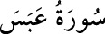

80- ABESE SÛRESİ
Mekke’de inmiştir, 42 âyettir. Adını, «yüzünü ekşitti, buruşturdu» anlamına gelen
ilk kelimesinden almıştır.
Bu sûrenin iniş sebebiyle ilgili olarak şöyle bir hâdise nakledilmiştir: Efendimiz;
Velîd, Ümeyye b. Halef, Utbe b. Rabîa gibi Kureyş’in ileri gelenlerine İslâm’ı
anlattığı bir sırada âmâ olan Abdullah b. Ümm-i Mektum gelir ve “Yâ Rasûlallah!
Allah’ın sana öğrettiklerinden bana da öğret” der. O esnâda Rasûlullah (s.a.) cevap
vermez. Çünkü Kureyş’in bu ileri gelen kimseleri, zaten kendilerine özel muamele
edilmesini istiyorlardı. Efendimiz onları gücendirmek istemedi. Abdullah tekrar
seslenince elinde olmayarak yüz hatları değişti. Bu esnâda onlar kalkıp gittiler.
Biraz sonra bu âyetler geldi. Rasûlullah’ın bazı davranışlarını tenkit ve onu ikaz
mâhiyetinde gelen bu ve benzeri âyetler, onun hak peygamber olduğuna en büyük
delildir. Zira hiç kimse kendisini bu şekilde tenkit etmez.